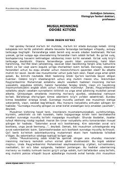

MOIslomiy odoblar, sunnatlar va kundalik hayot qoidalariga bag'ishlangan risola.
Mazkur kitobda islomiy odoblar, Payg'ambarimiz Muhammad sollallohu alayhi vasallamning sunnatlari, kundalik turmush tarzidagi axloqiy mezonlar va hadislar jamlangan. Asar insonning ma'naviy kamoloti va pokiza e'tiqod ruhida tarbiyalanishiga xizmat qiladi. Ota-onalar, yoshlar va keng kitobxonlar ommasiga mo'ljallangan.